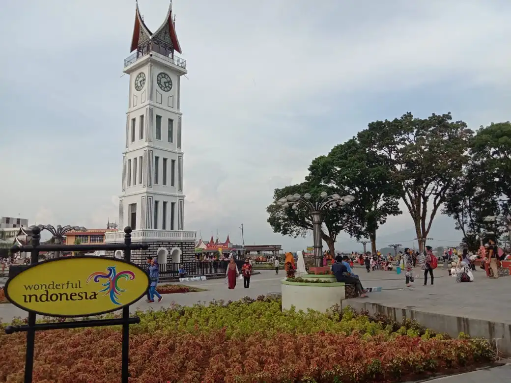

Jam Gadang adalah nama untuk menara jam yang terletak di pusat kota Bukittinggi, Sumatera Barat, Indonesia. Menara jam ini memiliki jam dengan ukuran besar di empat sisinya sehingga dinamakan Jam Gadang, sebutan bahasa Minangkabau yang berarti "jam besar".
Selain sebagai pusat penanda kota Bukittinggi, Jam Gadang juga telah dijadikan sebagai objek wisata dengan diperluasnya taman di sekitar menara jam ini. Taman tersebut menjadi ruang interaksi masyarakat baik di hari kerja maupun di hari libur. Acara-acara yang sifatnya umum biasanya diselenggarakan di sekitar taman dekat menara jam ini.
Jam Gadang memiliki denah dasar seluas 13 x 4 meter. Bagian dalam menara jam setinggi 26 meter ini terdiri dari beberapa tingkat, dengan tingkat teratas merupakan tempat penyimpanan bandul. Bandul tersebut sempat patah hingga harus diganti akibat gempapada tahun 2007.
Terdapat 4 jam dengan diameter masing-masing 80 cm pada Jam Gadang. Jam tersebut didatangkan langsung dari Rotterdam,Belanda melalui pelabuhan Teluk Bayur dan digerakkan secara mekanik oleh mesin yang hanya dibuat 2 unit di dunia, yaitu Jam Gadang itu sendiri dan Big Ben di London, Inggris. Mesin jam dan permukaan jam terletak pada satu tingkat di bawah tingkat paling atas. Pada bagian lonceng tertera pabrik pembuat jam yaitu Vortmann Relinghausen. Vortman adalah nama belakang pembuat jam, Benhard Vortmann, sedangkan Recklinghausen adalah nama kota di Jerman yang merupakan tempat diproduksinya mesin jam pada tahun 1892.

Jam Gadang dibangun tanpa menggunakan besi peyangga dan adukan semen. Campurannya hanya kapur, putih telur, dan pasir putih.
Jam Gadang selesai dibangun pada tahun 1926 sebagai hadiah dari Ratu Belanda kepada Rook Maker, sekretaris atau controleurFort de Kock (sekarang Kota Bukittinggi) pada masa pemerintahan Hindia Belanda. Arsitektur menara jam ini dirancang oleh Yazid Rajo Mangkuto, sedangkan peletakan batu pertama dilakukan oleh putra pertama Rook Maker yang pada saat itu masih berusia 6 tahun.
Pembangunan Jam Gadang menghabiskan biaya sekitar 3.000 Gulden, biaya yang tergolong fantastis untuk ukuran waktu itu. Sehingga sejak dibangun dan sejak diresmikannya, menara jam ini telah menjadi pusat perhatian setiap orang. Hal itu pula yang mengakibatkan Jam Gadang kemudian dijadikan sebagai penanda atau markah tanah dan juga titik nol Kota Bukittinggi.[1]
Sejak didirikan, menara jam ini telah mengalami tiga kali perubahan pada bentuk atapnya. Awal didirikan pada masa pemerintahan Hindia Belanda, atap pada Jam Gadang berbentuk bulat dengan patung ayam jantan menghadap ke arah timur di atasnya. Kemudian pada masa pendudukan Jepang diubah menjadi bentuk pagoda. Terakhir setelah Indonesia merdeka, atap pada Jam Gadang diubah menjadi bentuk gonjong atau atap pada rumah adat Minangkabau, Rumah Gadang.
Renovasi terakhir yang dilakukan pada Jam Gadang adalah pada tahun 2010 oleh Badan Pelestarian Pusaka Indonesia (BPPI) dengan dukungan pemerintah kota Bukittinggi dan Kedutaan Besar Belanda di Jakarta. Renovasi tersebut diresmikan tepat pada ulang tahun kota Bukittinggi yang ke-262 pada tanggal 22 Desember 2010.